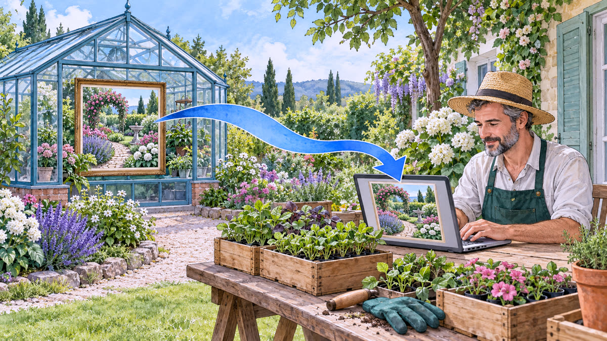
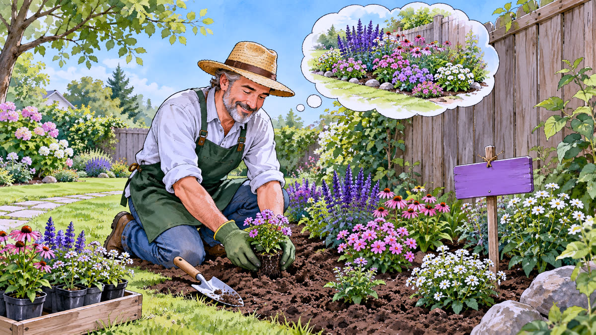
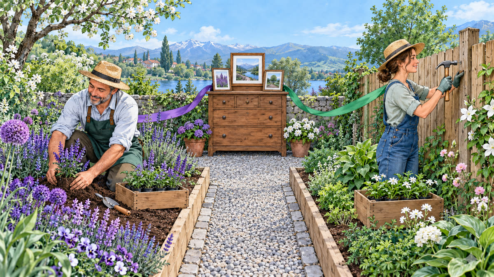
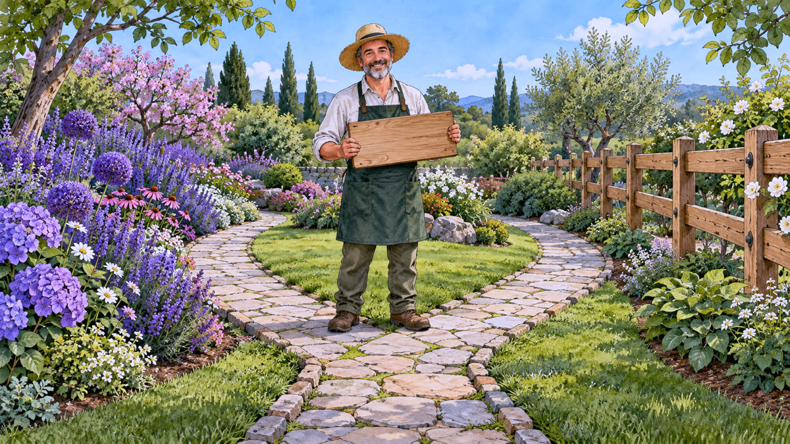
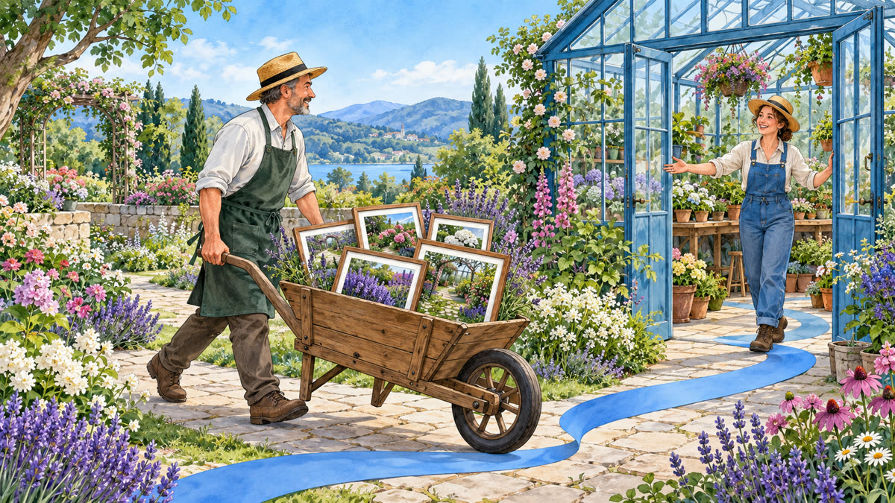

How it works

The gardener's 6 steps
This is the daily cycle: you clone once, then repeat commit, branch, merge, and push. Click a step to open its explanation.
1 · Clone→2 · Commit→3 · Branch→4 · Worktree→5 · Merge→6 · Push

Step 1
Clone — Bring the garden home
Clone copies the project and its entire history to your computer.
Step 2
Commit — Take a photo of the garden
Edit, choose what to include, and take the photo. The commit saves it on your computer.

Step 3
Branch — Try a new idea
A branch is a label that moves along with your new commits.

Step 4
Worktree — Two flower beds at the same time
A worktree is another folder for the same project, open on another branch.

Step 5
Merge — Bring the changes together
Merge brings two histories together in a new commit.

Step 6
Push — Share with the team
Push sends your commits to the remote. Now the team can get them.